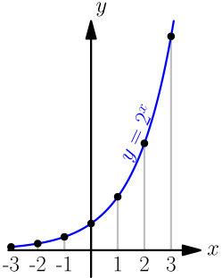
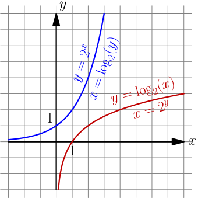
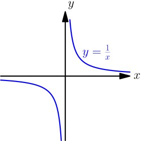
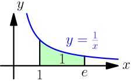
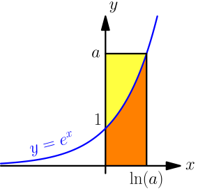

Exponent Functions and Logarithms¶
The above title sounds really boring, so I wonder how you ended up reading this thing. The mathematician inside may might find some of this interesting though.
This chapter assumes that you know derivatives.
Exponent Functions¶
So far we haven't talked about things like $x^{-1}$, but we can easily define them by just being consistent with other rules we already have:
$$\begin{align}x^2 &= \frac{x^3}x \\ x^1 &= \frac{x^2}x \\ x^0 &= \frac{x^1}x = \frac x x = 1 \\ x^{-1} &= \frac{x^0}x = \frac 1 x \\ x^{-2} &= \frac{x^{-1}}x = \frac{1/x}{x} = \frac{1}{x^2} \\ x^{-3} &= \frac{x^{-2}}x = \frac{1/x^2}{x} = \frac{1}{x^3}\end{align}$$So in general, we have $x^{-y} = \frac{1}{x^y}$. Let's draw a few points of the graph $y=2^x$ and connect them with a smooth curve:

The graph suggests that we should be able to do things like $2^{1/2}$ or $2^\pi$ because it's smooth and continuous. In fact, we're already familiar with the special case $2^{1/2}$, that's $\sqrt{2}$.
Also note that the graph is growing really fast as $x$ gets bigger. This is known as exponential growth.
The e constant¶
See Also
This video contains a different kind of introduction to $e$ with more facts but less details.
Let's try to find the derivative of $b^x$ where the base $b$ is a positive constant.
$$\begin{align}\frac{d}{dx} b^x &= \lim_{h \to 0} \frac{b^{x+h}-b^x}{h} \\ &= \lim_{h \to 0} \frac{b^x a^h - b^x \cdot 1}{h} \\ &= \lim_{h \to 0} \frac{b^x(b^h-1)}{h} \\ &= \lim_{h \to 0} \left(b^x \frac{b^h-1}{h}\right) \\ &= b^x \cdot \lim_{h \to 0}\frac{b^h-1}{h}\end{align}$$Note that the only $x$ in what we ended up with is outside the lim, so the entire lim thing is actually yet another constant. So, wouldn't it be handy if the whole lim thing was just 1? Then $\frac{d}{dx} b^x$ would be just $b^x$.
Turns out that there's only one $b$ value that satisfies this, and mathematicians call that number $e$.
$$\begin{align}\lim_{h\to0} \frac{e^h-1}{h} = 1\end{align}$$$$\begin{align}\frac{d}{dx} e^x = e^x\end{align}$$Here are a couple different ways to define $e$. We'll make sure that these satisfy the lim thing above in a moment.
$$\begin{align}e = \lim_{n\to\infty} \left(1 + \frac 1 n \right)^n = \lim_{n\to-\infty} \left(1 + \frac 1 n \right)^n\end{align}$$I'm not going to prove that the limits with $n$ going to $\infty$ and $-\infty$ give the same value because it's quite boring and messy. Let's calculate an approximate value of $e$ and check the answer:
>>> n = 10000000000
>>> (1 + (1/n))**n
2.7182820532347876
>>> n = -10000000000
>>> (1 + (1/n))**n
2.7182820535066154
>>> import math
>>> math.e
2.718281828459045
I think this is quite nice. We got this magic $2.718...$ number out of pretty much nowhere. You'll be amazed by all the places where it occurs.
Let's make sure that the $e$ definitions satisfy our $\displaystyle\lim_{h\to0} \textstyle\frac{e^h-1}{h} = 1$ thing. Let's set $t=1/n$, so $t$ goes to $0$ from the positive side if $n\to\infty$ and from the negative side if $n\to-\infty$.
$$\begin{align}t &= \frac 1 n \\ nt &= 1 \\ n &= \frac 1 t\end{align}$$$$\begin{align}e = \lim_{n\to\infty} \left(1 + \frac 1 n \right)^n = \lim_{n\to-\infty} \left(1 + \frac 1 n \right)^n = \lim_{t\to0} (1+t)^{1/t}\end{align}$$Let's plug this into our $h$ limit. It doesn't matter how $t$ and $h$ relate to each other as long as they both go to $0$, so we can set $t=h$.
$$\begin{align}\lim_{h\to0} \frac{e^h-1}{h} &= \lim_{h\to0} \frac{\left((1+h)^{1/h}\right)^h-1}{h} \\ &= \lim_{h\to0} \frac{(1+h)^{1/{\rcancel h}\cdot\rcancel h}-1}{h} \\ &= \lim_{h\to0} \frac{(1+h)-1}{h} \\ &= \lim_{h\to0} \frac{h}{h} \\ &= 1\end{align}$$Many programming languages have an exp(x) function that returns $e^x$, and
it's usually more precise than e.g. pow(e, x) or e**x, although the
difference is hardly noticable:
>>> math.exp(3)
20.085536923187668
>>> math.e**3
20.085536923187664
Logarithms¶
See Also
The graphs page contains graph drawing demos of exponent functions and logarithms.
A logarithm is the inverse of an exponent. If $y=b^x$, then $x = \log_b(y)$. You can also think of logarithms like $\log_b(b^x) = x$ and $b^{\log_b(x)} = x$. The $b$ is known as the base of the logarithm.
The inversiness looks like this in graphs:

Note that the $\log_2$ graph does not exist in the $x<0$ area because $2^x>0$ with any $x$. You cannot take any logarithm of zero or a negative value.
The base $e$ logarithm $\log_e(x)$ is often written as $\ln(x)$. The n is short for "natural", and $\log_e$ is called natural because it appears surprisingly often in all kinds of places because of the $e$. We'll see examples of that later in this chapter.
Many programming languages and calculators have a log(x) function, and
usually it returns $\ln(x)$, $\log_2(x)$ or $\log_{10}(x)$. If you aren't sure
which logarithm it is, you can try it like this:
>>> import math
>>> math.log(2)
0.6931471805599453
>>> math.log(10)
2.302585092994046
>>> math.log(math.e)
1.0
Python's math.log(x) returns $\ln(x)$.
Logarithm Rules¶
The summary page contains a bunch of formulas of stuff that can be done with logarithms. They are proved here.
In these proofs, $x>0$, $y>0$, $a>0$, $a\ne1$, $b>0$ and $b\ne1$. The proofs are ordered so that they don't use anything that hasn't been proved before them, but they use things that directly follow from the inversiness like $b^{\log_b(x)}=x$.
$$\begin{align}x^y &= x^y \\ b^{\log_b(x^y)} &= \left(b^{\log_b(x)}\right)^y \\ b^{\log_b(x^y)} &= b^{\log_b(x) \cdot y} \\ \log_b(x^y) &= \log_b(x) \cdot y \\ &= y \log_b(x)\end{align}$$$$\begin{align}xy &= xy \\ b^{\log_b(xy)} &= b^{\log_b(x)}\ b^{\log_b(y)} \\ b^{\log_b(xy)} &= b^{\log_b(x) + \log_b(y)} \\ \log_b(xy) &= \log_b(x) + \log_b(y)\end{align}$$$$\begin{align}\log_b\left( \frac x y \right) &= \log_b\left( x \frac 1 y \right) \\ &= \log_b x + \log_b \left(\frac 1 y\right) \\ &= \log_b x + \log_b \left(y^{-1}\right) \\ &= \log_b x + (-1)\log_b(y) \\ &= \log_b x - \log_b(y)\end{align}$$$$\begin{align}\log_a(x) &= \log_a(x) \\ \log_a\left( b^{\log_b(x)} \right) &= \log_a(x) \\ \log_b(x)\ \log_a(b) &= \log_a(x) \\ \log_b(x) &= \frac{\log_a(x)}{\log_a(b)}\end{align}$$Note how some of these rules are nicely related to more well-known exponentiation rules:
$$\begin{align}b^{x+y} &= b^xb^y \\ \log_b(x)+\log_b(y) &= \log_b(xy)\end{align}$$Use the $\log_b(x) = \displaystyle\frac{\log_a(x)}{\log_a(b)}$ formula if your programming language doesn't have a logarithm that returns what you want:
function log4(x) {
// this works with any logarithm, so i don't even need to care about
// which logarithm Math.log is in javascript
return Math.log(x) / Math.log(4);
}
Most programming languages have a few different logarithm functions like
log2 or log10, and some allow specifying a base like math.log(x, 4)
in Python.
Derivative of any exponent function¶
Earlier we tried to find the derivative of $a^x$ where $a>0$ and we ended up with this:
$$\begin{align}\frac{d}{dx} b^x = b^x \cdot \lim_{h \to 0}\frac{b^h-1}{h}\end{align}$$But now we know that $\frac{d}{dx} e^x = e^x$ and we also know logarithms. Let's keep working on the derivative.
$$\begin{align}b^x = e^{\ln(b^x)} = e^{x \ln(b)}\end{align}$$Here I used the $\log_b(x^y)=y \log_b(x)$ formula that we proved above. So it looks like we could do this (remember to use the chain rule):
$$\begin{align}\frac{d}{dx} b^x = \frac{d}{dx} e^{\overbrace{x \ln(b)}^{\substack{\text{inner} \\ \text{stuff}}}} = \underbrace{e^{x \ln(b)}}_{\text{this is }b^x} \cdot \overbrace{\frac{d}{dx}(x \underbrace{\ln(b)}_\text{constant}) }^{\substack{\text{derivative of} \\ \text{inner stuff}}} = b^x \ln(b)\end{align}$$That's quite nice, but now we also have this:
$$\begin{align}\frac{d}{dx} b^x &= \frac{d}{dx} b^x \\ \rcancel{b^x}\ln(b) &= \rcancel{b^x} \lim_{h \to 0}\frac{b^h-1}{h} \\ \ln(b) &= \lim_{h\to0} \frac{b^h-1}{h}\end{align}$$This is why the base $e$ logarithm is known as the natural logarithm, or $\ln$ for short. It appears "naturally" in surprising places.
Derivative of a logarithm¶
Let's find the derivative of $e^{\ln(x)}$ with the chain rule. We don't know what the derivative of the inner stuff is yet, but it's not a problem; let's just say that's $\frac{d}{dx}\ln(x)$ and figure out the actual value later.
$$\begin{align}\frac{d}{dx}(e^{\overbrace{\ln(x)}^{\substack{\text{inner} \\ \text{stuff}}}}) = \underbrace{e^{\ln(x)}}_{\text{this is }x} \cdot \frac{d}{dx}\ln(x) = x \cdot \frac{d}{dx}\ln(x)\end{align}$$We can also start by using the $e^{\ln(x)}=x$ rule.
$$\begin{align}\frac{d}{dx}(e^{\ln(x)})=\frac{d}{dx}x=1\end{align}$$The two answers must be equal:
$$\begin{align}x \cdot \frac{d}{dx}\ln(x) &= 1 \\ \frac{d}{dx}\ln(x) &= \frac 1 x\end{align}$$That's quite nice.
Exercise
This technique is not limited to $e^x$ and $\ln x$ in any way. Prove that $\frac{d}{dx} \sqrt x=\frac{1}{2\sqrt x}$ with $\frac{d}{dx}x^2=2x$ and $\bigl(\sqrt x\bigr)^2=x$.
Let's generalize $\frac{d}{dx}\ln(x)=\frac1x$ with the $\log_b(x) = \displaystyle\frac{\log_a(x)}{\log_a(b)}$ rule:
$$\begin{align}\frac{d}{dx} \log_b(x) &= \frac{d}{dx} \left(\frac{\ln(x)}{\ln(b)}\right) \\ &= \frac{d}{dx} \Biggl(\underbrace{\frac{1}{\ln(b)}}_\text{constant}\ln(x)\Biggr) \\ &= \frac{1}{\ln(b)} \cdot \frac{d}{dx} \ln(x) \\ &= \frac{1}{\ln(b)} \cdot \frac 1 x \\ &= \frac{1}{x \ln(b)}\end{align}$$Again, the natural logarithm appears in a calculation that seems to have nothing to do with $e$.
Quick check: if we plug in $b=e$ we get $\frac{d}{dx}\ln(x)=\frac{1}{x\ln e}$, which is equal to $\frac 1 x$ because $\ln(e)=\ln(e^1)=1$.
Example: Derivative of $x^c$¶
In the more derivatives chapter we proved that $\frac{d}{dx} x^c = c\ x^{c-1}$ if $c$ is a positive integer. If we are really clever, we can use $\frac{d}{dx} e^x = e^x$ for generalizing this to any $c$ value. However, unlike our previous proof, this works only if $x>0$ because we need $\ln(x)$, and we can't take logarithms of negative numbers (see above).
$$\begin{align}x^c = e^{\ln(x^c)} = e^{c \ln(x)}\end{align}$$Now we can find the derivative easily:
$$\begin{align}\frac{d}{dx} x^c &= \frac{d}{dx} e^{\overbrace{c\ln(x)}^{\substack{\text{inner}\\\text{stuff}}}} = e^{c \ln(x)} \cdot \frac{d}{dx}(c \ln(x)) \\ &= x^c \cdot c \frac 1 x = c\frac{x^c}x = c\ x^{c-1}\end{align}$$It's handy that this isn't limited to integers. For example:
$$\begin{align}\frac{d}{dx} \sqrt x = \frac{d}{dx} x^{1/2} = \frac 1 2 x^{1/2 - 1} = \frac 1 2 x^{-1/2} = \frac 1 2 \cdot \frac{1}{x^{1/2}} = \frac{1}{2\sqrt x}\end{align}$$Here we don't need to worry about negative $x$ values because we can't take square roots of negative values anyway.
Exercise
Logarithms are handy for proving other derivative rules too if we can assume that things are positive. Prove that $\frac{d}{dx}(f(x)g(x))=f'(x)g(x)+f(x)g'(x)$ when $f(x)>0$ and $g(x)>0$ by rewriting $f(x)g(x)$ as $e^{\ln(f(x)g(x))}=e^{\ln(f(x))+\ln(g(x))}$.
Integral of $\frac 1 x$¶
Rest of this chapter assumes that you know integrals.
We know that $\frac{d}{dx}(x^a)=ax^{a-1}$, and it's quite straight-forward to get this integral rule from that:
$$\begin{align}\int x^a\ dx = \frac{x^{a+1}}{a+1} + C\end{align}$$You can check that by taking a derivative of both sides. Maybe we could use this for integrating $\frac 1 x$ because $\frac 1 x = x^{-1}$?
$$\begin{align}\int x^{-1}\ dx = \frac{x^{-1+1}}{-1+1} = \frac{x^0}{0}\end{align}$$Oops, we got division by zero. That didn't work.
But we also know that $\frac{d}{dx}\ln(x) = \frac 1 x$, so we must also have $\int\frac 1 x\ dx = \ln(x) + C$. However, that only works if $x > 0$ because we can't take a logarithm of a negative number, but $\frac 1 x$ is defined for any $x \ne 0$:

If $x$ is negative, then $-x$ is positive. Maybe something like $\ln(-x)$ happens to be our $\frac 1 x$ antiderivative? Let's see.
$$\begin{align}\frac{d}{dx} \ln(\underbrace{-x}_{\substack{\text{inner} \\ \text{stuff}}}) = \frac{1}{-x} \cdot (-1) = \frac 1 x\end{align}$$Now we have this:
$$\begin{align}\int\frac 1 x\ dx = \left\{\begin{array}{ll} \ln(x) + C & \text{ if } x > 0 \\ \ln(-x) + C & \text{ if } x < 0 \\ \end{array}\right.\end{align}$$We can simplify this a bit with this definition of the absolute value:
$$\begin{align}|x| = \left\{\begin{array}{ll} x & \text{ if } x > 0 \\ -x & \text{ if } x < 0 \\ \end{array}\right.\end{align}$$For example, $|4| = 4$ and $|-4| = -(-4) = 4$. Here are our final results:
$$\begin{align}\int\frac 1 x\ dx &= \ln(|x|) + C \\ \int x^a\ dx &= \left\{\begin{array}{ll} \ln(|x|) + C & \text{ if } a=-1 \\ \displaystyle\frac{x^{a+1}}{a+1} + C & \text{ otherwise} \\ \end{array}\right.\end{align}$$Here's a nice integral with $\frac 1 x$ and a constant $a>0$:
$$\begin{align}\int_1^a\frac 1 x\ dx &= \Bigl[\ln(|x|)\Bigr]_1^a = \Bigl[\ln(x)\Bigr]_1^a = \ln(a) - \ln(1) \\ &= \ln(a) - \ln(e^0) = \ln(a) - 0 = \ln(a)\end{align}$$We also know that $\ln(e) = \rcancel{\ln}(\rcancel{e}^1) = 1$, so we can define $e$ as the only number that satisfies this:
$$\begin{align}\int_1^e\frac 1 x\ dx = 1\end{align}$$Integrals of Exponent Functions¶
We know that $\frac{d}{dx} b^x = b^x \ln(b)$. Turning that into an antiderivative rule is easy because $\ln(b)$ is a constant and we can use the $\frac{d}{dx}(c\ f(x)) = c\ f'(x)$ rule right-to-left.
$$\begin{align}\frac{d}{dx} b^x &= b^x \ln(b) \\ \frac{\frac{d}{dx} b^x}{\ln(b)} &= b^x \\ \underbrace{\frac{1}{\ln(b)}}_\text{constant} \cdot \frac{d}{dx} b^x &= b^x \\ \frac{d}{dx} \left( \frac{1}{\ln(b)} b^x \right) &= b^x \\ \frac{d}{dx} \left( \frac{b^x}{\ln(b)} \right) &= b^x\end{align}$$Now we know that $\frac{b^x}{\ln(b)}$ is an antiderivative of $b^x$, so here's the solution:
$$\begin{align}\int b^x\ dx = \frac{b^x}{\ln(b)} + C\end{align}$$Of course, $\int e^x\ dx = e^x + C$ because $\ln(e)=\rcancel{\ln}(\rcancel{e}^1)=1$, but also because $\frac{d}{dx} e^x = e^x$.
Integrals of Logarithms¶
Let's start by integrating $\ln(x)$. There are several ways to do this, but here's my favorite way:

We know that $y = e^x$, so $x = \ln(y)$. That's how $\ln(a)$ appears on the x axis. The orange area is obviously $\int_0^{\ln(a)} e^x\ dx$ and similarly the yellow area is $\int_1^a \ln(y)\ dy$.
But if we add together the yellow and orange areas, we get an $a$ by $\ln(a)$ rectangle:
$$\begin{align}\int_0^{\ln(a)} e^x\ dx + \int_1^a \ln(y)\ dy &= a \ln(a) \\ \int_1^a \ln(y)\ dy &= a \ln(a) - \int_0^{\ln(a)} e^x\ dx \\ &= a \ln(a) - \Bigl[ e^x \Bigr]_0^{\ln(a)} \\ &= a \ln(a) - \left( e^{\ln(a)} - e^0 \right) \\ &= a \ln(a) - (a - 1) \\ &= a \ln(a) - a + 1\end{align}$$If you have read my introduction to integrals you probably realized that $a \ln(a) - a + 1$ is an antiderivative of $\ln(a)$. Let's check it just to be sure using the $\frac{d}{dx}(f(x)g(x))=f'(x)g(x)+f(x)g'(x)$ rule:
$$\begin{align}\frac{d}{da} (a \ln(a) - a + 1) &= 1 \cdot \ln(a) + \rcancel a \frac{1}{\rcancel a} - 1 + 0 \\ &= \ln(a) \rcancel{+ 1} \rcancel{- 1} = \ln(a)\end{align}$$Note that the $+1$ at the end turned into $+0$ in the derivative, so everything would work just fine without it. We're almost done:
$$\begin{align}\int \ln(x)\ dx = x \ln(x) - x + C\end{align}$$I replaced $a$ with $x$ just to make the formula look a bit more familiar.
Now we just need to generalize this to other logarithms:
$$\begin{align}\int \log_b(x)\ dx &= \int \frac{\ln(x)}{\ln(b)}\ dx \\ &= \int \underbrace{\frac{1}{\ln(b)}}_\text{constant} \ln(x)\ dx \\ &= \frac{1}{\ln(b)} \int \ln(x)\ dx \\ &= \frac{x \ln(x) - x}{\ln(b)} + C\end{align}$$$$\begin{align}\frac{d}{dx} \left(\frac{x \ln(x) - x}{\ln(b)} + C \right) &= \frac{d}{dx} \left(\frac{1}{\ln(b)}\bigl(x \ln(x) - x\bigr) \right) + \frac{d}{dx} C \\ &= \frac{1}{\ln(b)} \cdot \frac{d}{dx}(x \ln(x) - x) + 0 \\ &= \frac{1}{\ln(b)} \ln(x) = \frac{\ln(x)}{\ln(b)} = \log_b(x)\end{align}$$